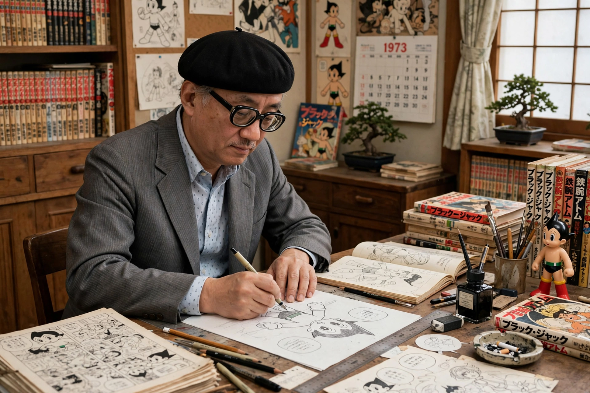

| Osamu Tezuka | |
|---|---|
| Born | 3 November 1928, Toyonaka, Osaka, Japan |
| Died | 9 February 1989 (aged 60), Tokyo, Japan |
| Occupation | Manga artist, animator, cartoonist, film producer |
| Known for | Astro Boy, Black Jack, Kimba the White Lion, Phoenix |
| Honours | Order of the Sacred Treasure |
Osamu Tezuka (手塚 治虫, 3 November 1928 – 9 February 1989) was a Japanese manga artist, cartoonist and animator. Often called the "God of Manga" (Manga no Kamisama), he is credited with creating the foundations of modern manga and anime through his prolific output — some 700 manga titles comprising roughly 150,000 pages — and his cinematic storytelling style.
Tezuka was born in Toyonaka, Osaka, and grew up in Takarazuka, Hyōgo, where his mother took him to the all-female Takarazuka Revue, a lasting influence. A devoted fan of Walt Disney and the Fleischer brothers, he drew comics from childhood. He qualified as a physician at Osaka University but chose art over medicine.
His breakthrough came with New Treasure Island (1947), which sold some 400,000 copies and introduced fast-paced, film-like panel work. Jungle Emperor Leo (Kimba the White Lion) began in 1950, and Tetsuwan Atomu — Astro Boy — in 1952 made him Japan's most famous cartoonist. In 1963 his studio Mushi Production adapted Astro Boy into Japan's first major television anime series, pioneering the low-cost limited-animation model that still defines the industry.
Through the 1970s Tezuka reinvented himself for adult readers with works such as Black Jack (1973–1983), about an unlicensed genius surgeon; the vast, unfinished reincarnation epic Phoenix (1967–1988), which he regarded as his life's work; Buddha (1972–1983); and Adolf (1983). Mushi Production went bankrupt in 1973, but Tezuka Productions, founded in 1968, continued his work.
Tezuka borrowed the language of cinema — close-ups, pans, montage, "cuts" across panels — and developed a "star system" in which a repertory cast of character designs reappears in different roles, like actors. His large-eyed character style, influenced by Disney and Betty Boop, became manga's visual default. Virtually every major manga artist of the following generations, from Shotaro Ishinomori to contemporary creators, cites him as a formative influence; in the West his reputation grew alongside that of American comics traditions.
Tezuka died of stomach cancer in 1989, aged 60; his last words were reported to be a plea to be allowed to keep working. The Osamu Tezuka Manga Museum opened in Takarazuka in 1994, and the Tezuka Osamu Cultural Prize has honoured manga excellence since 1997.